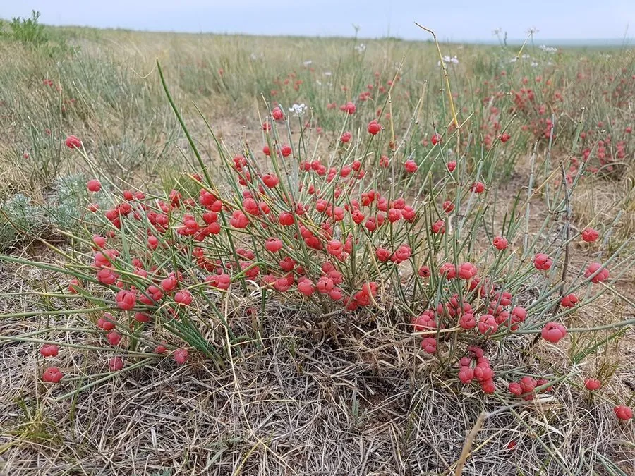

蕨类与裸子植物 · 植物界
麻黄 Ephedra sinica

麻黄是没有叶子的灌木状裸子植物，茎含麻黄碱，是传统中药材，也是提取麻黄素的原料，需依法管理。
- 分类
- 门裸子植物门纲买麻藤纲目麻黄目科麻黄科属麻黄属
- 栖息环境
- 干旱草原、荒漠草原与砂地，喜光照充足、干燥多风环境
- 地理分布
- 中国内蒙古、新疆、甘肃、陕西、河北、山西等北方干旱地区
- 保护级别
- 暂无评估；药用采挖依法许可管理
物种志
麻黄是麻黄科草本状或小灌木状裸子植物，高 20–40 cm。它的茎直立，多分枝，表面绿色、有细纵槽，能进行光合作用；叶片退化成鳞片状，膜质，对生或轮生，长仅 1–2 mm，基部连合。雌雄异株，球花小，腋生或顶生。种子通常 2 粒，包在肉质的苞片中，成熟时呈红色。
麻黄是中国北方草原与干旱地区常见的植物，分布于内蒙古、新疆、甘肃、陕西、河北、山西等地，喜干旱、多风、光照充足的环境，耐寒、耐旱。它是著名的中药材，茎含麻黄碱、伪麻黄碱等生物碱，有发汗解表、宣肺平喘、利水消肿之效，也是提取麻黄素的重要原料。由于麻黄碱可被滥用提炼制毒，野生麻黄被大量盗采，中国对麻黄草的采挖、经营实行许可管理，需要依法合理利用。
形态与习性
- 株高20–40 cm
- 茎绿色，有细纵槽，可光合作用
- 叶退化呈鳞片状，长 1–2 mm
- 药用含麻黄碱、伪麻黄碱
- 功效发汗解表、宣肺平喘
- 管理采挖与经营需许可
趣味知识
- 麻黄的叶子退化成很小的鳞片，靠绿色的茎进行光合作用。
- 麻黄是我国传统中药材，茎中含麻黄碱，可平喘止咳。
- 因麻黄碱可能被滥用，野生麻黄的采挖与经营实行许可管理。